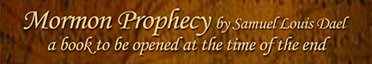

Preisthood History from Abraham to Joseph Smith
The most detailed reference to the priesthood comes to us from Genesis, the Apostle Paul, and Joseph Smiths translation during the time of Abraham. I will use the latter first: “And Melchizedek lifted up his voice and blessed Abram. Now Melchizedek was a man of faith, who wrought righteousness; and when a child he feared God, and stopped the mouths of lions, and quenched the violence of fire. And thus, having been approved of God, he was ordained an high priest after the order of the covenant which God made with Enoch, It being after the order of the Son of God; which order came, not by man, nor the will of man; neither by father nor mother; neither by beginning of days nor end of years; but of God; And it was delivered unto men by the calling of his own voice, according to his own will, unto as many as believed on his name” . (JST Genesis 14:25-29 Compare with Genesis 14:18-20). When man is approved of God he is ordained a High Priest after the order of the covenant which God made with Enoch. This order was after the order of the Son of God. When we consider the use of order we first think of the order in which thing appear as in who comes first, second, third, and so forth. We then think of order as in the Order of the Priesthood exemplified in all Christian Churches as something like Bishop, Priest or Deacon—implying the first meaning. Historically, the word "order" (Latin ordo) designated an established civil body with a hierarchy, and ordinatio meant legal incorporation into an ordo. The word "holy" refers to the Church. In context, therefore, a holy order is set apart for ministry in the Church. This implies position of order from the highest to the least to administer the needs of the order. We have leaned two things out of tradition Genesis. One is the order of leadership and the other is the Order or community. When you dwell on the leadership, you mean the priesthood, but when you dwell on the people, you mean the principles they live by. The above reference indicated a covenant which God made with Enoch. We know that the city of Enoch indicated and order in which the saints lived, but what does it mean to be a high priest after this order, which was also after the order of the Son of God? Does it mean the order is simply and order of high priests, an order in which the high priests administer, or an order in which the high priests live according to some covenant that God makes with them? “For God having sworn unto Enoch and unto his seed with an oath by himself; that every one being ordained after this order and calling should have power, by faith, to break mountains, to divide the seas, to dry up waters, to turn them out of their course; To put at defiance the armies of nations, to divide the earth, to break every band, to stand in the presence of God; to do all things according to his will, according to his command, subdue principalities and powers; and this by the will of the Son of God which was from before the foundation of the world. And men having this faith, coming up unto this order of God, were translated and taken up into heaven” (JST Genesis 14:31-32 compare with Genesis 14:18-20). The covenant was with Enoch and his seed that if sufficient faith is demonstrated and everyone being ordained after this order would have power to break the mountains of central control, divide and understand the knowledge of the Lord so as to turn it out of the course of tradition, and divide the saints and break every band they are under. If you do not like the interpretation, you can create your own, but remember the literal is like unto the spiritual and if you stay too literal, the event will never happen because the literal hides the spiritual and keeps it from corruption. Note that everyone being ordained would have this power. If all had the priesthood, how do we get a hierarchy or some order of authority? This should answer the former question.”
“And now, Melchizedek was a priest of this order; therefore he obtained peace in Salem, and was called the Prince of peace. And his people wrought righteousness, and obtained heaven, and sought for the city of Enoch which God had before taken, separating it from the earth, having reserved it unto the latter days, or the end of the world; And hath said, and sworn with an oath, that the heavens and the earth should come together; and the sons of God should be tried so as by fire. And this Melchizedek, having thus established righteousness, was called the king of heaven by his people, or, in other words, the King of peace. And he lifted up his voice, and he blessed Abram, being the high priest, and the keeper of the storehouse of God; Him whom God had appointed to receive tithes for the poor” (JST Genesis 14:33-38 compare with Genesis 14:36-38). Melchizedek and the people of Salem like unto Enoch wrought righteousness and for their faith. They obtained heaven—not an afterlife heaven, but a heaven on the planet, otherwise why mention peace in Salem? King Melchizedek set up Salem after the order of Enoch, which God had taken from the people before. It is interesting the Lord promised Enoch the city would return in the latter days. Melchizedek was not in the latter days, which would indicate the Redemption of Zion would be a fitting conclusion of this promise. The people called Melchizedek the king of heaven—another reason this is heaven on the physical planet earth. The king of heaven is also a king of peace suggesting no bonds or control by powers. Melchizedek a high priest of the order blessed Abraham who was keeper of the storehouse of God. It was Abraham specific duty to keep this storehouse for the poor.
“Wherefore, Abram paid unto him tithes of all that he had, of all the riches which he possessed, which God had given him more than that which he had need. And it came to pass, that God blessed Abram, and gave unto him riches, and honor, and lands for an everlasting possession; according to the covenant which he had made, and according to the blessing wherewith Melchizedek had blessed him” (JST Genesis 14:39-40 Compare with Genesis 14:18-20). These last verses are enlightening because they add something tradition does not see. Abraham paid tithes to King Melchizedek from this storehouse. According to the Mosaic method, this was tithes of tithes or if the storehouse being the tithes collected from the people then Abram paid 1 percent of the total collected to the King. Abraham paid a tithe of his tithes collected. Now consider this is Joseph Smiths record and yet the Mormon Church does not practice tithes of tithes. All tithes go directly to the king or the Church central treasury.
Consider if in modern times each county paid a tenth of its collection to the state and the state a tenth of its collection to the Federal Government. Like the Mormon Church, the government does not follow the plan of God and thus we suffer the bonds of an abusive government in the same way the Kingdom of Iron has iron teeth. Man cannot understand the knowledge of the Lord and thus cannot free himself from these bonds. If one local community lived the order of Enoch and desired the name of the order of the Son of God, perhaps we could eventually only redeem Zion and the constitution if man could have such faith. God blessed Abraham riches more than he had need because of his faith and the faith of those in his community. Do we not want the same blessings? Before we can consider this, we need to learn more. Just because Abraham paid tithes of the tithes collected, whom did he collect from and how large was his community? If Abraham was a high priest after this order, can we assume that all the male members were high priests living the same principles? Are Mormons or any other person thinking about this try to think of the hierarchy in this community in order to see where they might fit? If such is ever the case, it is the first sigh that the order will eventually fail, because the first thing man thinks of is his honor and position or the idolatry that lingers in his heart. The priesthood would have to fit an order of discussion as if every man was a prophet in such a way for every priesthood holder to have an equal opportunity to speak. Decisions must be unanimous and smaller forums must elect representative to higher forums until the highest decides in unity to the whole. This fuses the Order of Enoch into the Order of the Priesthood as one thing. Man by nature seeks a position greater in order to place himself above as leader. He does not want to become servant to all. This nature thrives on a democracy of majority rule while God’s order thrives on common consent in a republic. OOOO A Look at Paul’s View: “For this Melchisedec, king of Salem, priest of the most high God, who met Abraham returning from the slaughter of the kings, and blessed him; To whom also Abraham gave a tenth part of all; first being by interpretation King of righteousness, and after that also King of Salem, which is, King of peace; Without father, without mother, without descent, having neither beginning of days, nor end of life; but made like unto the Son of God; abideth a priest continually” (Hebrews 7:1–3). This compares equally with Joseph Smith. “Now consider how great this man was, unto whom even the patriarch Abraham gave the tenth of the spoils” (Hebrews 7:4). This is in contrast to Joseph Smith. Is Paul wrong or is Joseph Smith. Spoils implies a tithe of income and generally suggests the reason why the Protestants accepted this view. There is more from Paul, but first we must give the view from Genesis.
“And the king of Sodom went out to meet him after his return from the slaughter of Chedorlaomer, and of the kings that were with him, at the valley of Shaveh, which is the king’s dale. And Melchizedek king of Salem brought forth bread and wine: and he was the priest of the most high God. And he blessed him, and said, Blessed be Abram of the most high God, possessor of heaven and earth: And blessed be the most high God, which hath delivered thine enemies into thy hand. And he gave him tithes of all. And the king of Sodom said unto Abram, Give me the persons, and take the goods to thyself. And Abram said to the king of Sodom, I have lift up mine hand unto the Lord, the most high God, the possessor of heaven and earth, That I will not take from a thread even to a shoelatchet, and that I will not take any thing that is thine, lest thou shouldest say, I have made Abram rich: Save only that which the young men have eaten, and the portion of the men which went with me, Aner, Eshcol, and Mamre; let them take their portion” (Genesis 14:17–24)
Notice that the mention of Melchizedek in italics is sandwiched between the mention of king of Sodom and Abraham. Actually all kings were together in Joseph’s translation, but Abraham’s conversation between Sodom and himself ended its completion before Joseph mentioned the grand details about Melchizedek. In the Hebrew English, the above is identical other than a bit of spelling. You can speculate how Joseph was able to elaborate, but when the King of Sodom said to Abraham, “Give me the persons and take the goods to thyself” was his thanks for saving the people of Sodom. Abraham said, “I will not take anything that is thine.” This does not agree with Paul’s rendition that Abraham paid tithes of the spoils. Paul assumed spoils because he was a Roman Soldier and that was the pattern, or someone after him changed things to fit their view of tithing. Desperately needed, clarification came with Joseph Smith and his inspired solution. Now back to Paul. “And verily they that are of the sons of Levi, who receive the office of the priesthood, have a commandment to take tithes of the people according to the law, that is, of their brethren, though they come out of the loins of Abraham: But he whose descent is not counted from them received tithes of Abraham, and blessed him that had the promises. And without all contradiction the less is blessed of the better. And here men that die receive tithes; but there he receiveth them, of whom it is witnessed that he liveth. And as I may so say, Levi also, who receiveth tithes, payed tithes in Abraham. For he was yet in the loins of his father, when Melchisedec met him” (Hebrews 7:5–10). Paul introduces the sons of Levi as receiving the priesthood, but this was after Moses—a lesser priesthood. Paul is not clear in explaining that Levi is a descendant of Abraham and one of the tribes of Jacob. Paul assesses that those not counted of the lesser priesthood received a portion of the tithes collected by Abraham. The Levitical priesthood did not exist so those, perhaps woman and children not of the High Priesthood, received tithes of Abraham according to their needs. This is where the lesser receive the blessing of the better. No other idea will work when Abraham paid tithes of the tithes collected to Melchizedek and the remainder he returned to the poor in need.
“If therefore perfection were by the Levitical priesthood, (for under it the people received the law,) what further need was there that another priest should rise after the order of Melchisedec, and not be called after the order of Aaron? For the priesthood being changed, there is made of necessity a change also of the law” (Hebrews 7:11–12). Paul is talking about a need to change the Law of Tithing from the Mosaic Law to that of Christ because Christ was a High Priest after the order of Enoch and not after the order of Aaron a Levite as was Moses also a Levite. Did the Levites after Moses practice a different tithe? It was a tithe of increase off the land, while Abraham paid tithes of all he possessed. In our day, it is the difference between an income tax and a property tax. None of Christianity including the Mormon Church can make the distinction that the two priesthoods had different laws as Paul so eloquently illustrated. Paul goes on to say one must come after the order of Melchizedek. This was Christ. He had the power to make one a High Priest after the Order of the Son of God without an oath of punishment. This would take another article to explain, but essentially these High Priests were offered eternal grace for living the Law of Christ—the Order of Enoch.
Truth Regarding Moses: Israel after Moses had the priesthood, but it was of a lesser order as also were the laws that came with the priesthood. Abraham, Isaac and Jacob had the higher priesthood as well as the Order of Enoch, but by the time Israel fell into bondage for many years under Egyptian rule, they lost everything. Israel needed a Moses and the power of God to bring the higher priesthood back with the order of the same.
“And the sons of Moses, according to the Holy Priesthood which he received under the hand of his father-in-law, Jethro; And Jethro received it under the hand of Caleb” (Doctrine and Covenants 84:6–7). It is natural to assume that Moses received the higher Priesthood. Then comes Moses on the mount. What did he receive there? “ And the Lord said unto Moses, Come up to me into the mount, and be there: and I will give thee tables of stone, and a law, and commandments which I have written; that thou mayest teach them” (Exodus 24:12). The law and commandments sound like two concepts. I maintain he received the Order of Enoch as well as the temporal commandments that the Order of Enoch fulfills. The higher or Melchizedek priesthood administers the Order of Enoch, but where came the lesser priesthood, which administered only the carnal commandments? When Moses brought instructions of the Lord, written in stone, down from the mount, he realized Israel could not live them. In his anger, he broke the tablets.
“And it came to pass, as soon as he came nigh unto the camp, that he saw the calf, and the dancing: and Moses’ anger waxed hot, and he cast the tables out of his hands, and brake them beneath the mount” (Exodus 32:19). Moses realized the Law or Order of Enoch would be impossible because they could not even obey the first commandment. As instruction by the Lord, “And Moses went up into the mount, and a cloud covered the mount. And the glory of the Lord abode upon mount Sinai, and the cloud covered it six days: and the seventh day he called unto Moses out of the midst of the cloud” (Exodus 24:15–16). After the Lord covered instructions over forty days for building the Arc of the Covenant included through chapter 31—seven chapters later, “And he gave unto Moses, when he had made an end of communing with him upon mount Sinai, two tables of testimony, tables of stone, written with the finger of God” (Exodus 31:18). This was the second time God had written tables of stone. Jewish tradition assumes that God gave the same laws as before.
“And the Lord said unto Moses, Hew thee two other tables of stone, like unto the first, and I will write upon them also, the words of the law, according as they were written at the first on the tables which thou brakest; but it shall not be according to the first, for I will take away the priesthood out of their midst; therefore my holy order, and the ordinances thereof, shall not go before them; for my presence shall not go up in their midst, lest I destroy them. But I will give unto them the law as at the first, but it shall be after the law of a carnal commandment; for I have sworn in my wrath, that they shall not enter into my presence, into my rest, in the days of their pilgrimage. Therefore do as I have commanded thee, and be ready in the morning, and come up in the morning unto mount Sinai, and present thyself there to me, in the top of the mount” (JST Exodus 34:1-2 compare with Exodus 34:1–9). Joseph Smith Clarifies again. The use of “my holy order” should have made it clear to the Mormons that this was the Order of Enoch, which was after the Order of the Son of God. I have never met a Mormon who understands. They attribute this holy order to the higher priesthood and temple marriage, the requirement of which demands the obedience to a Mosaic law of tithe. Remember the use of my presence. OOOO Another Revelation: “Which Abraham received the priesthood from Melchizedek, who received it through the lineage of his fathers, even till Noah; And from Noah till Enoch, through the lineage of their fathers; And from Enoch to Abel, who was slain by the conspiracy of his brother, who received the priesthood by the commandments of God, by the hand of his father Adam, who was the first man—Which priesthood continueth in the church of God in all generations, and is without beginning of days or end of years. And the Lord confirmed a priesthood also upon Aaron and his seed, throughout all their generations, which priesthood also continueth and abideth forever with the priesthood which is after the holiest order of God. And this greater priesthood administereth the gospel and holdeth the key of the mysteries of the kingdom, even the key of the knowledge of God. Therefore, in the ordinances thereof, the power of godliness is manifest. And without the ordinances thereof, and the authority of the priesthood, the power of godliness is not manifest unto men in the flesh; For without this no man can see the face of God, even the Father, and live” (Doctrine and Covenants 84:14–22). We learn the following: Abraham received the Priesthood through the linage of his fathers. The description works backwards from Noah, to Enoch, to Abel, and starting with Adam. This higher priesthood is without beginning of days or end of years. Based on an eternal principle and not a hierarchy of authority, this higher priesthood follows the natural law of conservation that abides forever. This higher priesthood holds the keys to the knowledge of God if all become prophets according to the school of this priesthood—all having an equal opportunity to teach and learn. In this ordinance, or school of the prophets, the power of God is manifest in the flesh. Without this man cannot see the face of God or endure his presence. “Now this Moses plainly taught to the children of Israel in the wilderness, and sought diligently to sanctify his people that they might behold the face of God; But they hardened their hearts and could not endure his presence; therefore, the Lord in his wrath, for his anger was kindled against them, swore that they should not enter into his rest while in the wilderness, which rest is the fulness of his glory. Therefore, he took Moses out of their midst, and the Holy Priesthood also; And the lesser priesthood continued, which priesthood holdeth the key of the ministering of angels and the preparatory gospel; Which gospel is the gospel of repentance and of baptism, and the remission of sins, and the law of carnal commandments, which the Lord in his wrath caused to continue with the house of Aaron among the children of Israel until John, whom God raised up, being filled with the Holy Ghost from his mother’s womb” (Doctrine and Covenants 84:23–27). The Jews had only the Priesthood of Arron because they could not endure the presence of God—meaning his holy priesthood and the Order of Enoch. They lived the lesser Mosaic Law of tithe until John who came and said the Kingdom of Heaven was at hand. John restored all things—meaning the principles of the Order of Enoch and Christ sealed the Holy Priesthood upon those who lived according to the Laws of Heaven.
Heaven becomes a complete concept of the individual priesthood holder seeing the face of God—as in knowing him; loving others as himself—as in living the Order of Enoch; and becoming a prophet—as in knowing all things. These blessing follow them that have such faith. They can change the course of knowledge, rise others from darkness, and free those in bondage. As the Lord said he would restore the priesthood before the redemption of the redemption of Zion, for the redemption must needs come by power. “But verily I say unto you, I have decreed that your brethren which have been scattered shall return to the lands of their inheritances, and shall build up the waste places of Zion. For after much tribulation, as I have said unto you in a former commandment, cometh the blessing. Behold, this is the blessing which I have promised after your tribulations, and the tribulations of your brethren—your redemption, and the redemption of your brethren, even their restoration to the land of Zion, to be established, no more to be thrown down. Nevertheless, if they pollute their inheritances they shall be thrown down; for I will not spare them if they pollute their inheritances. Behold, I say unto you, the redemption of Zion must needs come by power; Therefore, I will raise up unto my people a man, who shall lead them like as Moses led the children of Israel. For ye are the children of Israel, and of the seed of Abraham, and ye must needs be led out of bondage by power, and with a stretched-out arm. And as your fathers were led at the first, even so shall the redemption of Zion be. Therefore, let not your hearts faint, for I say not unto you as I said unto your fathers: Mine angel shall go up before you, but not my presence. But I say unto you: Mine angels shall go up before you, and also my presence, and in time ye shall possess the goodly land” (Doctrine and Covenants 103:11–20). The Lord held back Moses and his presence—being the higher priesthood as the children of Israel entered the Promised Land. Before Zion’s Final Redemption, the Lord will restore the Priesthood and the administering of angels. How then would the priesthood become essential if the sun goes down over the prophets? There is this gift and power of the priesthood that few realize. It is in obtaining the knowledge of the Lord without the hand of the Church controlling what the priesthood teaches, hears and practices. “For where two or three are gathered together in my name, there am I in the midst of them” (Matthew 18:20). “Verily, verily, I say unto you, as I said unto my disciples, where two or three are gathered together in my name, as touching one thing, behold, there will I be in the midst of them—even so am I in the midst of you. Fear not to do good, my sons, for whatsoever ye sow, that shall ye also reap; therefore, if ye sow good ye shall also reap good for your reward” (Doctrine and Covenants 6:32–33). “As also through your administration the keys of the school of the prophets, which I have commanded to be organized; That thereby they may be perfected in their ministry for the salvation of Zion, and of the nations of Israel, and of the Gentiles, as many as will believe; That through your administration they may receive the word, and through their administration the word may go forth unto the ends of the earth, unto the Gentiles first, and then, behold, and lo, they shall turn unto the Jews. And then cometh the day when the arm of the Lord shall be revealed in power in convincing the nations, the heathen nations, the house of Joseph, of the gospel of their salvation” (Doctrine and Covenants 90:7–10). The Lord had commanded but the Mormon Church has abolished. The priesthood as two or more can take up the school of the prophets at any time by gathering and agree on any one thing. This was the intent of the Lord, but Satan has turned it into a hierarchy of one commanding in all things. If any soul attempts to suggest the redemption of Zion is to come, his comments become smothered over by traditional remarks pointing only to those above, selected by one and intimidated to consent by all. With this type of idolatry, the school of the prophets cannot survive. Thus, the church discourages discussion naturally by those wishing to maintain control and keep their honor and power. This will not prevent the Lord from revealing his power to the priesthood. Wait and you will see.